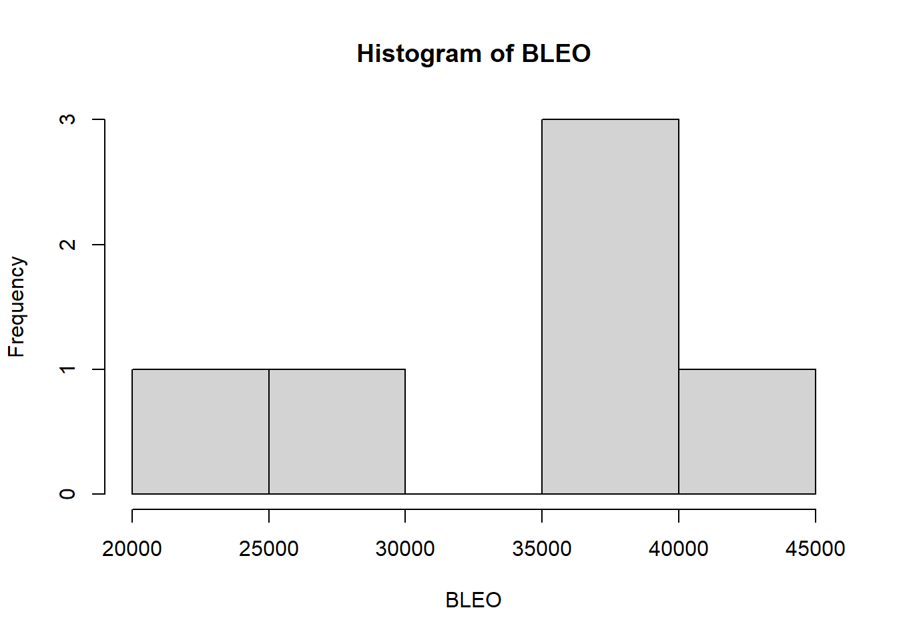
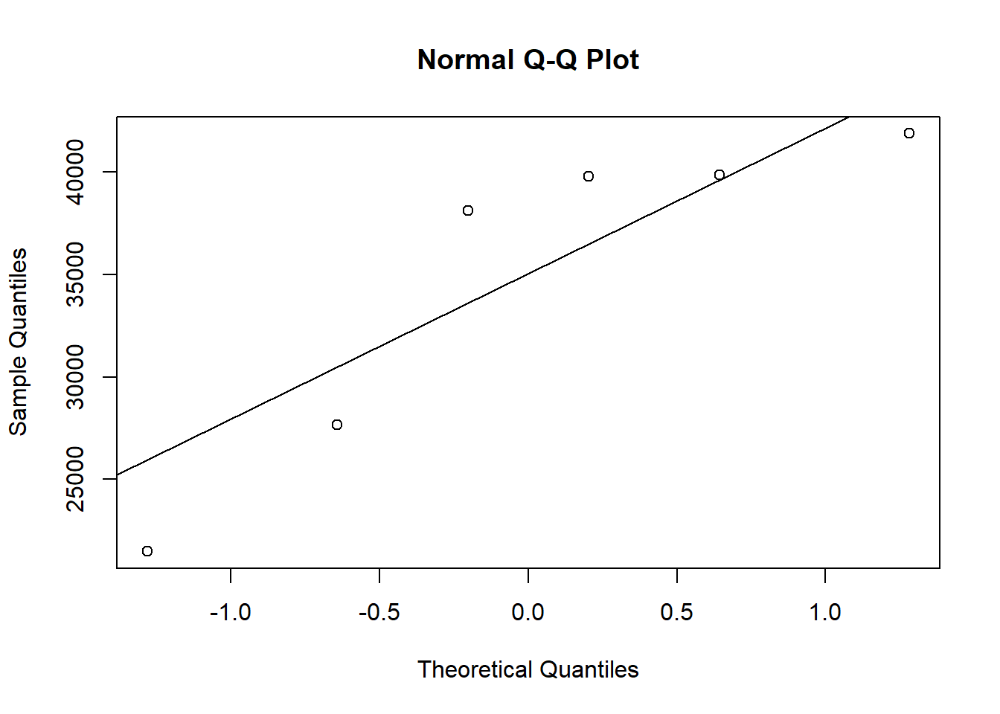
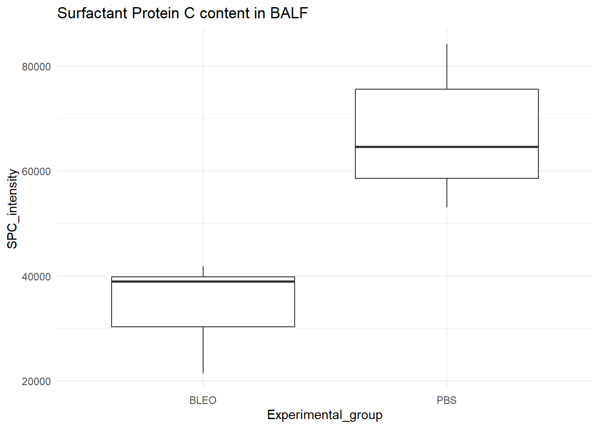

#In my project I focus in epithelial plastiticty in idiopathic pulmonary fibrosis. An important cell population that is impacted and changed is Alveolar type 2 cell. These cells secrete surfactant protein C (SPC) in the alveolar space which is essential for normal lung funtion. In mice after the use of bleomycin to trigger lung fibrosis we expect that the amount of SPC is changed and will be considered as a endpoitn to analyse when an specific oxidoreductase is missing. for now I`m only comparing PBS groups (received saline/control) and Bleo(received bleomycin for injury). The values seem are the density of proteins bands in a membrane after Western Blot of bronchoalveolar lavage fluid (BALF).
#To start simply, assume that the data in each of your treatment groups follow a normal distribution. Specify the sample sizes, means, and variances for each group that would be reasonable if your hypothesis were true. From one of my experiments:
#Using as reference, for my personal data the mean intensity of SPC band in the PBS groups is 61251 whith standard deviation of 15314 and for Bleo group mean 31146 and standard deviation of 7724
#first start using as reference some mean and standard deviation from my experiments
PBS <-rnorm(n=6, mean = 61251, sd = 15314)
BLEO <-rnorm(n=6, mean = 31146, sd = 7724)
my_frame <- data.frame(PBS,BLEO)
print(my_frame)## PBS BLEO
## 1 53045.58 38099.20
## 2 79222.56 27644.02
## 3 64569.34 39839.23
## 4 84173.35 41864.33
## 5 56611.67 39789.76
## 6 64671.94 21488.87#Bellow used some tools that are described to be used to determine if distribution is normal. Although my sample number is small and perhaps not ideal for this type of analysis
shapiro.test(PBS)##
## Shapiro-Wilk normality test
##
## data: PBS
## W = 0.91709, p-value = 0.4846summary(PBS)## Min. 1st Qu. Median Mean 3rd Qu. Max.
## 53046 58601 64621 67049 75585 84173hist(PBS)qqnorm(PBS)
qqline(PBS)shapiro.test(PBS)##
## Shapiro-Wilk normality test
##
## data: PBS
## W = 0.91709, p-value = 0.4846summary(BLEO)## Min. 1st Qu. Median Mean 3rd Qu. Max.
## 21489 30258 38944 34788 39827 41864hist(BLEO)
qqnorm(BLEO)
qqline(BLEO)
SPC_intensity <- c(PBS,BLEO)
Experimental_group <- c(rep("PBS", length(PBS)),rep("BLEO",length(BLEO)))
d_frame <- data.frame(SPC_intensity, Experimental_group)
print(d_frame)## SPC_intensity Experimental_group
## 1 53045.58 PBS
## 2 79222.56 PBS
## 3 64569.34 PBS
## 4 84173.35 PBS
## 5 56611.67 PBS
## 6 64671.94 PBS
## 7 38099.20 BLEO
## 8 27644.02 BLEO
## 9 39839.23 BLEO
## 10 41864.33 BLEO
## 11 39789.76 BLEO
## 12 21488.87 BLEO#t_test
t.test <-t.test(SPC_intensity~Experimental_group, data=d_frame)
print(t.test)##
## Welch Two Sample t-test
##
## data: SPC_intensity by Experimental_group
## t = -5.3333, df = 8.7295, p-value = 0.0005235
## alternative hypothesis: true difference in means between group BLEO and group PBS is not equal to 0
## 95 percent confidence interval:
## -46010.43 -18512.58
## sample estimates:
## mean in group BLEO mean in group PBS
## 34787.57 67049.07library(ggplot2)
ggplot(d_frame, aes(x = Experimental_group, y = SPC_intensity)) +
geom_boxplot() +
labs(title= "Surfactant Protein C content in BALF") +
theme_minimal()
#Using a series of for loops, adjust the parameters of your data to explore how they might impact your results/analysis, and store the results of your for loops into an object so you can view it. For example, what happens if you were to start with a small sample size and then re-run your analysis? Would you still get a significant result? What if you were to increase that sample size by 5, or 10? How small can your sample size be before you detect a significant pattern (p < 0.05)? How small can the differences between the groups be (the “effect size”) for you to still detect a significant pattern?
p_values <- numeric(10)
#set up so loops 10 times
for (i in 1:10) {
PBS <-rnorm(n=6, mean = 61251, sd = 15314)
BLEO <-rnorm(n=6, mean = 31146, sd = 7724)
SPC_intensity <- c(PBS,BLEO)
Experimental_group <- c(rep("PBS", length(PBS)),rep("BLEO",length(BLEO)))
d_frame <- data.frame(SPC_intensity, Experimental_group)
t_test <-t.test(SPC_intensity~Experimental_group, data=d_frame)
p_values[i] <- t_test$p.value
#set up to print the p.value in each loop
print(t_test$p.value)
}## [1] 0.01941394
## [1] 0.0002779773
## [1] 3.326848e-05
## [1] 0.0005304
## [1] 0.01115896
## [1] 0.005638032
## [1] 0.001094564
## [1] 0.007979273
## [1] 0.01339123
## [1] 0.005961892#used which function to determine which of the loops came out with significant value (<0.05)
which(p_values<=0.05)## [1] 1 2 3 4 5 6 7 8 9 10#what happens if you were to start with a small sample size and then re-run your analysis? Would you still get a significant result?
#In general when doing the loops. The proportion of significant p value was lower in the the case with smaller sample size.
p_values <- numeric(10)
for (i in 1:10) {
PBS <-rnorm(n=3, mean = 61251, sd = 15314)
BLEO <-rnorm(n=3, mean = 31146, sd = 7724)
SPC_intensity <- c(PBS,BLEO)
Experimental_group <- c(rep("PBS", length(PBS)),rep("BLEO",length(BLEO)))
d_frame <- data.frame(SPC_intensity, Experimental_group)
t_test <-t.test(SPC_intensity~Experimental_group, data=d_frame)
p_values[i] <- t_test$p.value
print(t_test$p.value)
}## [1] 0.162924
## [1] 0.08063394
## [1] 0.1655123
## [1] 0.02834004
## [1] 0.1040771
## [1] 0.05228381
## [1] 0.06176371
## [1] 0.000753398
## [1] 0.01209245
## [1] 0.003029478#bellow are the p values that are significant
which(p_values<=0.05)## [1] 4 8 9 10#Bellow how it would look with a sample size of 10.
p_values <- numeric(10)
for (i in 1:10) {
PBS <-rnorm(n=10, mean = 61251, sd = 15314)
BLEO <-rnorm(n=10, mean = 31146, sd = 7724)
SPC_intensity <- c(PBS,BLEO)
Experimental_group <- c(rep("PBS", length(PBS)),rep("BLEO",length(BLEO)))
d_frame <- data.frame(SPC_intensity, Experimental_group)
t_test <-t.test(SPC_intensity~Experimental_group, data=d_frame)
p_values[i] <- t_test$p.value
print(t_test$p.value)
}## [1] 0.0001216098
## [1] 0.0001478612
## [1] 4.760486e-05
## [1] 4.456088e-05
## [1] 7.85629e-05
## [1] 0.0008251127
## [1] 1.092556e-05
## [1] 9.191582e-06
## [1] 6.324016e-05
## [1] 2.353193e-05#bellow are the p values that are significant
which(p_values<=0.05)## [1] 1 2 3 4 5 6 7 8 9 10